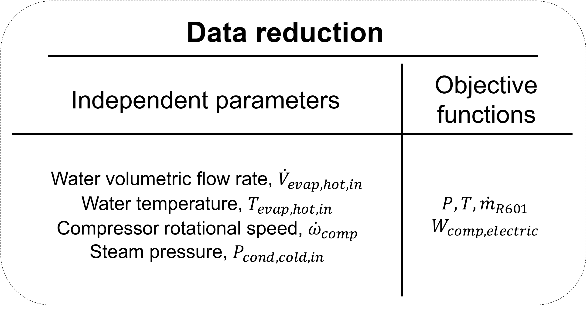
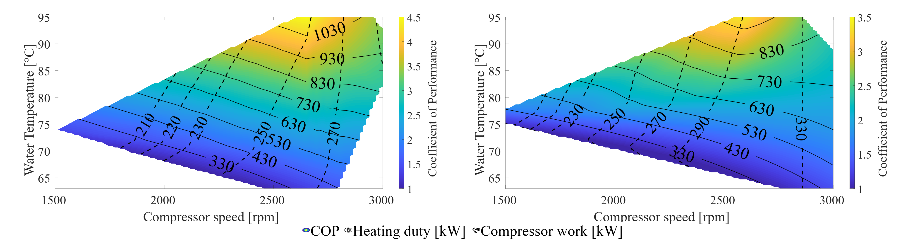

Introduction
Industrial heat pumps (HPs) are a sustainable alternative to fossil-fueled boilers for generating process heat, particularly when powered by renewable electricity. However, their adoption is slowed by limited understanding of HP performance under varying operating conditions, as traditional evaluation methods like experiments or high-fidelity simulations are costly and time-consuming.
This study presents a digital-twin framework that combines machine learning, specifically Gaussian Process Regression (GPR), with experimental data to model a 1 MWth industrial HP using n-Pentane as the working fluid. The system recovers waste heat from hot water to produce steam, with the model trained on 55 steady-state operating points from a state-of-the-art test facility. It accurately predicts component variables (pressures and temperatures) and system-level indicators such as COP and heating duty, with errors under 7% across varying conditions.
Beyond performance modeling, the digital twin enables economic and environmental assessments. Results show a payback period of 3.8–4.2 years, annual CO₂ savings of 250–1000 tons compared to a propane boiler, and energy savings exceeding 3000 MWh. The HP achieved a COP equal to 44% of the Carnot COP when operated at steam pressures of 1.9–2.4 bar.
Overall, this work demonstrates the potential of data-driven digital twins to improve the design, operation, and adoption of industrial HPs, offering a scalable framework to support the transition toward sustainable energy systems in industry.
Use this link to access the publication.
Methodology
An industrial heat pump system having 1MW heating capacity was studied in this work. The experimental facility and schematic of the physical system are viewed in below:

Step 1 – Data Generation
Fifty-five experimental measurements were performed by varying the system input parameters, and the time-domain data obtained served as the full-order model of the heat pump.
Step 2 – Data Reduction
For each measurement, the time-series data was averaged after the system reached steady-state conditions. System state variables — such as pressure and temperature at component boundaries, along with performance parameters including compressor work and heating duty — were then reduced as functions of the independent parameters.
Step 5 – Data Regression
A machine learning model was developed for each objective function, enabling performance estimation and flow variable monitoring at operating points not covered in the experimental work.


Digital twin of the heat pump for performance estimation and system variable monitoring
The generated digital twin of the heat pump system enabled performance mapping across varying independent parameters and supported an economic assessment of its deployment as a replacement for a fossil-fueled boiler in industrial settings.
